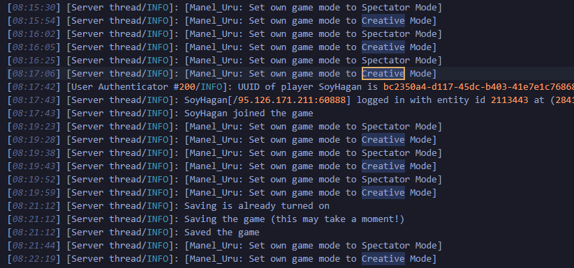
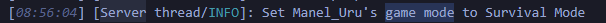
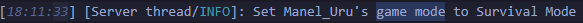

Pruebas del registro del servidor
Pruebas del dia 23 de Diciembre
Aqui podemos ver como Manel se pone en creativo y espectador muchas veces en una
rapida sucesión hasta la ultima vez a las 08:22

Y luego, media hora despues, vuelve a ponerse en survival

Por que cada vez que se pone en creativo se desconecta, espera un rato, se vuelve a conectar y se lo quita?
Esto se ha documentado las dos veces y ha pasado de la misma forma exactamente.
Pruebas del dia 25 de Diciembre
De nuevo, pasa lo mismo
Aqui podemos ver como se pone el creativo a las 15:17

Y se lo quita a las 18:11, 3 horas enteras despues
La pregunta es porque no se lo quita instantaneamente?? Por que espera tanto?
PORQUE PORQUE PORQUE PORQUE PORQUE PORQUE PORQUE PORQUE PORQUE PORQUE PORQUE PORQUE PORQUE PORQUE PORQUE PORQUE PORQUE PORQUE PORQUE PORQUE PORQUE PORQUE PORQUE PORQUE PORQUE PORQUE PORQUE PORQUE PORQUE PORQUE PORQUE PORQUE PORQUE PORQUE PORQUE PORQUE PORQUE PORQUE PORQUE PORQUE PORQUE PORQUE PORQUE PORQUE PORQUE